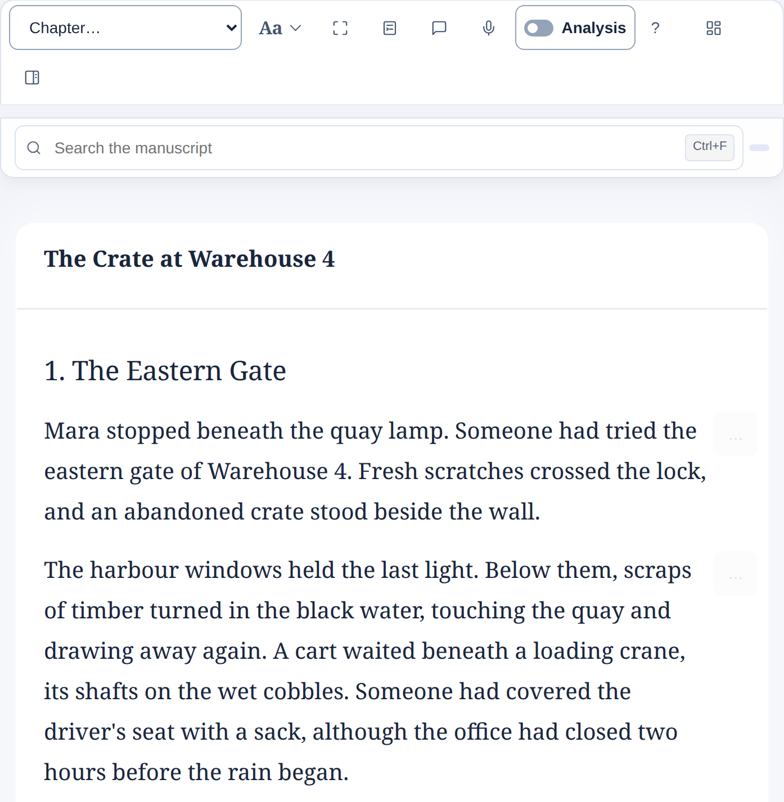

Revise without losing your place
Keep your review marks by the text as you write with local autosave. Compare the draft with the saved manuscript under the same analysis settings before applying it.
A local workspace for writers
Where does the rhythm change? Which words repeat? Lixity takes you to the passage. Compare drafts and keep character dossiers and sources beside your text. The open-source app reads Markdown and plain-text files locally.
A short practice exercise in English. Edit the sample in your browser.
Silent recording of the fictional Warehouse 4 project in the development build.
The video could not load. Explore the interactive demo instead. Explore the demo
Read, write, and check what changes in the text. Built-in analysis runs offline. Optional speech, map services, and connected AI clients have their own network and data-handling requirements.

Keep your review marks by the text as you write with local autosave. Compare the draft with the saved manuscript under the same analysis settings before applying it.

Open a note about sentence rhythm, quotations, or repeated words and inspect the counted text. Compare chapters and follow available evidence back to the prose to decide what deserves a closer read.

Draft a dossier from the prose and review its chapter distribution and passages in context. Keep your notes, claims, and exact source quotations beside the text.

Download the selected dossier version as an A4 PDF with its saved notes, tables, excerpts, and source quotations. For the manuscript, choose a print layout or prepare a reading website with chapter limits and spoiler controls.
Measurements describe patterns in the supplied text. They do not grade literary quality or tell you how to rewrite a passage. Inspect the counted words and sentences, read them in context, and decide whether a difference matters.
Review sentence lengths, recognized quotations and repeated words in a paragraph, then compare chapters. Open a mark to see what was counted.
Built-in analysis runs on your computer, where your project files are stored. Optional services such as map providers and external language models have their own data requirements.
Edit a paragraph in the browser exercise, which uses simplified rules. The English demo is a larger read-only example project. Install Lixity for full analysis and your own projects.
Choose the setup for Windows, macOS or Linux. The guide takes you from installation to opening your manuscript.
Downloads and setupThe published browser app is available on PyPI. The demo and source guides describe development version v0.9.1.
Latest published release · v0.9.1 release notesThe site and app interface are available in seven languages. Choose the manuscript analysis language explicitly; technical documentation remains in English.
Language rules and coverage vary by language, with German and English offering the deepest checks. Switching the interface language never alters your manuscript.
Technical guides, methods and automation contracts are maintained in English.
Tell us what you were writing, checking, or sharing, and where the studio helped or got in your way. You never need to send your manuscript.
Share feedback